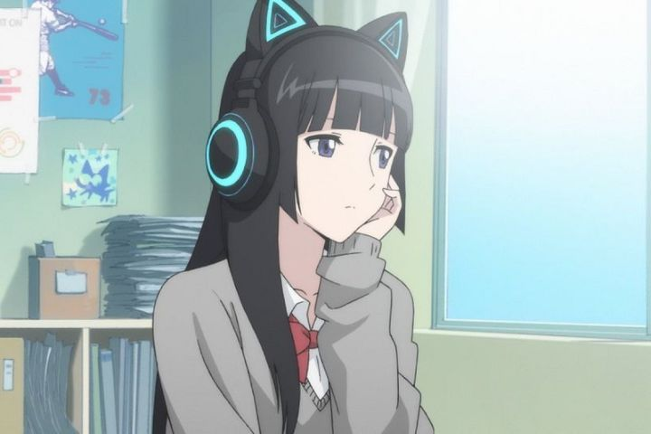

The original 2000 OVA series "FLCL" is the stuff of anime legend. It was trailblazing upon release, and to this day, decades later, remains a must-see classic on many top-10-anime-of-all-time lists. Seriously, if you haven't seen it yet, please do. One of the most remarkable things about it wasn't just the experimental content, but the format: it was perfectly fine at telling its story within a brief 6-episode set. It didn't need more. It didn't need a sequel. "FLCL" was one-of-a-kind, and that's why we loved it.... you can imagine the collective shock, annoyance and cautious excitement and from the otaku-community when a sequel was announced nearly two decades later. Yes, popular anime tend to get new content until they are milked dry, but "FLCL" was one of those few exceptions, and being an exception was part of its identity. Why a sequel? Why now?"FLCL - Progressive" and "FLCL - Alternative" are the two new six-episode sets, together forming a more traditional full-length 12-episode season. It was made possible by Adult Swim, the American television network that was focusing heavily on anime again in the late 2010's, and Production I.G., a co-producer to the original series. Technically, Gainax ("Neon Genesis Evangelion," "Gurren Lagann") animated the original OVA, and I.G. had to work hard to negotiate a deal to get the rights for animating a continuation themselves. Adult Swim's involvement would help ensure world-premiere broadcasting rights, which they used to full-effect, with an episode premiering in Japanese on April Fool's Day in 2018 before beginning the dub in June (Japan's release would come a few months later, purposely distinguishing itself as compilation films instead of just tv episodes). As always-relevant as the original themes of puberty, teenage angst and small-town malaise are, it's hard to imagine how "Progessive" and "Alternative" could maintain those same themes while feeling as original and unique as their predecesor. Not to mention how very "Gainax" the original OVA was in tone and style: no other studio has succeeded in copying their otaku-forward branding (even the spiritual sucessor Studio Trigger has their own unique flavor in comparison). No doubt Production I.G. had some fears about living up to the original, especially since I.G. typically creates high-quality, but mostly grounded and realistic work (ie: not stylized). Within the first five minutes of the first episode of "Progressive," I.G. takes direct inspiration from all of Gainax's popular work, from "Evangelion" to "Lagann," with a bit of "Gunbuster 2" for good measure. Despite all that, my first impression was that this new "FLCL" wasn't quite as well-animated or as sucessfully stylish as the original was.Of course, even a poor imitation of one of the greatest gems of anime can be a fantastic piece of entertainment. For whatever faults or disappointments "Progressive" and "Alternative" bring, I want to preface my thoughts with that fact: this show is awesome."Progessive" centers around a new teenage character: a girl named Hidomi. At 14 years old, she shows virtually no emotion with the outside world, always wearing a pair of cat-ear headphones to allow pretending not to hear others when it suits her. At night, she gets visions of a zombie-apocolypse, imagining herself as a shell falling apart among the ruins. Haruko, the pink-haired otaku Mary Poppins, pops in again, posing as a class teacher, she's trying again to bring out pure emotions from teenagers, by force if necessary, for an ongoing desire to reach the space Pirate King Atomsk. And Hidomi seems like an ideal raw candidate. Meanwhile, a mysterious woman named Jinyu, seemingly also from space, is fighting to stop Haruko and protect Hidomi.This arc is almost a perfect gender-swap to the first season of "FLCL," replacing male protagonist Naota with a girl, and replacing love-interest side characters with boys. Among them is Ide, a positive and passionate kid that is alone with Hidomi in realizing Haruko's tricks, as well as his best friends: a fat boy who insists "men wearing skirts to challenge gender norms" is trendy, and a handsome Spanish boy that sticks out in a Japanese high school. The "Progressive" subtitle feels appropriate on multiple levels, even if some of the elements should be more common across anime media. Teenage feelings, sexual frustrations and social awkwardness are still fully on display, as well as plenty of landscape-destroying fights and complex backlore with hyper Gainax-style animation. There's enough to make it distinct, but certainly, the story beats of "Progessive" should feel very familiar to fans of the original first season."Alternative" focuses on a third teenager, not on the verge of puberty, but on the tail-end of it. Kana is 17-years old, cheerful when hanging out in class, but at a crucial point where she has to figure out what comes after graudating from school. Drastically different from either the original or "Progessive," "Alternative" is almost entirely a girls' show, with Kana and her three girlfriends (a popular model-to-be, a large girl who isn't afraid to enjoy junk food, and a girl who likes trading everything from food to pens) just enjoying life in their quiet town, laughing on the beach and making bottle-rockets at night. When it becomes clear that boyfriends and part-time jobs are now a norm, Kana is emotionally being left behind, and she begins to realize she doesn't want things to change, but is powerless to stop it.Of course, Haruko shows up again, but in a much more subdued role, casually stalking the town from a distance, preparing to fight against an alien force heating up the planet, all while government agents publicly and privately try to deal with it themselves. The group of four, Kana in particular, happen to be yet another great source of raw emotion for Haruko to draw from, but this appears to be the only reason for her to randomly show up in the lives every few weeks. This season is much more grounded than both arcs that came before it, which might disappoint some viewers, despite still containing plenty of explosive action. Thematically, focusing on late teenage life was a brilliant idea, making "Alternative" feel like a proper sequel to "FLCL."With all that the original "FLCL" had, you would think there is nothing more to say about all the complex feelings we go through between the ages of 12 and 21. And yet, "Progressive" and "Alternative" manage to find and portray a variety of new but relatable feelings and ideas that kept me engaged and invested. While similar to what "FLCL" had, take my word that it's all still new, and even decades later, still different from what the varied field of anime has portrayed. But despite being new, it might not necessarily feel as "fresh" as it did in 2000. It's easy to throw shade and claim "Progressive" and "Alternative" didn't have anything new to say, but I think it would be a disservice to say so: even if they were pure copycats (and they aren't), a copy of a once-in-a-lifetime-masterpiece is always welcome. Great character-developments with the teens aside, "Progressive" and "Alternative" suffer a bit in the story in two ways: lore, and the endings. Even in the first "FLCL," Haruko's backstory was a source of mystery, compelling and exciting, and even though it didn't provide many answers, it provided enough to make an attentive viewer feel like they understood what happened by the end. It's a miracle that anyone could even attempt to write a continuation or expansion of this intergalactic war fueled by Haruko's revenge and passionate love. But expanding the lore only brings more questions than answers, and as much as I love Haruko's unpredictable personality, it's clear "lore" isn't "FLCL"'s strong suit. Throw in the endings: "Progessive" ends with a whimper compared to their previous episodes, and the ending to "Alternative" is ambiguous to the point of annoyance, both with the lore and the teenagers at the center. One major question is whether or not these new seasons are meant for newcomers or old fans. You would think this "spirtual reboot" would be a great place for new viewers to jump in, but there are enough callbacks and subtle references to past characters to make the original season feel like required viewing. In some cases, you'll be confused here EVEN after watching the original, and moreso if you haven't. Granted, experiencing what "FLCL" is through "Progressive" and "Alternative" first is still an amazing experience, but I can't help but recommend, if you only watch one, to watch the original. Even though Production I.G. isn't Gainax, and even though my first impression wasn't as strong, it's ultimately impressive how they flex their creative muscles in "FLCL Progressive" and "FLCL Alternative." Both are visually distinct from each other too. "Progressive" gets the most varied animation, with bold and exaggerated character animation that gets better as the episodes go on, with some excellent action scenes to boot. Episode 5 in particular switches the style completely, looking like a piece of high art worthy for a film festival. Meanwhile, "Alternative" is far more grounded, more like a traditional I.G. production, reminding me of "Eden of the East" in particular (complete with cute stop-motion end-credits). Again, there are som great action scenes involved, but it isn't as visually bold or as exciting as "Progressive" is, even if the overall quality is higher.And that overall quality plays a lot in my animation score. "Progressive" and "Alternative" have many scenes that look better than the average anime, but... the majority of the animation also looks cheap, barely on par with other modern anime. Again, I can't help but remember the original "FLCL," which was more consistent in its unique style, and again I come off slightly disappointed in these new seasons. Even so, animation fans will want to experience these episodes.It was already miraculous that "FLCL" would ever get a sequel, but this was doubly-impressive when Kari Wahlgren returned to voice the nasly-hyper-active Haruko in the English dub, and when alternative rock band "The Pillows" returned for the theme songs. The English dub is great, and they know who their audience is, even throwing in a bunch of Japanese slang that most productions would be scared to assume was understood. The weak part of the dub might be the teenagers: those are tough characters to act, and the actors do a good job considering. As great as "The Pillows" are, it's important to clarify their songs don't play heavily outside the two ending themes, even though they inspire the unique style the show is known for: instead, VERYGOO provides the greater soundtrack, which is just as great, if not better, than the original series.The American home-video release for "FLCL - Progressive and Alternative" is bizarre enough to warrant a full-length essay. After its run on Adult Swim, the two seasons were announced to get staggered DVD-only, English-only releases about a year later, at a very marketable cheap price, seemingly to sell to the average viewer in stores like Walmart. This was under the license by Warner Bros, and NOT their usual child-company Viz Media; it wasn't the first time Warner Bros had released anime, but it was rare (to the average viewer, the packaging here looks almost identical to what Viz would have released). Naturally, fans were not happy with anything less than a bilingual Bluray release: reverse-import fears were annoying in America in 2010, and were way to obvious if attempted in 2019. Curiously, even though the official packaging insists on English-only audio, an American representative confirmed through Twitter that the DVDs WOULD at least be blingual Japanese and English, and a last-minute sticker would be added to the sets to confirm it. Additionally, while initially described as "we hope to release it too" by the rep, the Bluray ended up not being delayed as much as we feared, confirmed and released in early 2020 (both seasons in one box, again at a good price). Yet again, the official materials claimed English-only, but despite the Bluray discs being the same region as Japan (therefore, a legitimate fear for reverse-importing there), we heard on Twitter again that dual-audio was included, and again a last-minute sticker was added. I have the Bluray, and can confirm both languages are present.One could come up with a few theories about what exactly was going on with this weird American home-video fiasco. Why not announce DVD and Bluray releases at the same time? Why the confusion with languages? Why use Twitter? It could be Warner Bros simply didn't setup the ability to list multiple languages on their DVD packaging and press releases, never bothering, since they mostly do in-house Hollywood films. My personal theory is that the Japanese producers really did try to halt the cheap and timely American release, and that either Adult Swim (and their parent, WB) had to fight to convince them that this was legally agreed to in their producers contract, OR that they totally went behind Production I.G.'s back to at least provide the Japanese dub, using misleading packaging to satisfy them, knowing their businessmen wouldn't bother reading an English Twitter account or popping the disc in to verify. It would make a great story for an insider to explain the truth a decade later or so, but most likely, we'll never know exactly what happened. Honestly, the Bluray, complete with extra bonus featurettes, is everything I could want for the price, so I'll drop the mystery and be happy with what I have.Hype and high expectations can ruin public opinion of a show. I could be wrong, but my reading from public comments of "FLCL Progressive" and "FLCL Alternative" was that the public was lukewarm in its reception: the show was good, but not as good, and ultimately did nothing new to justify itself. An argument can be made for that. But even though these new iterations weren't as good or as fresh as "FLCL" was when it first came out, "Progressive" and "Alternative" impressed me. They showed there's a lot more that can be told in its framework. And compared to even the best anime we get each year, I can say with confidence that "Progressive" and "Alternative," again, make "FLCL" one of the better shows of its decade.
- "Ani" More reviews can be found at : https://2danicritic.github.io/ Previous review: review_FLCL Next review: review_Flee